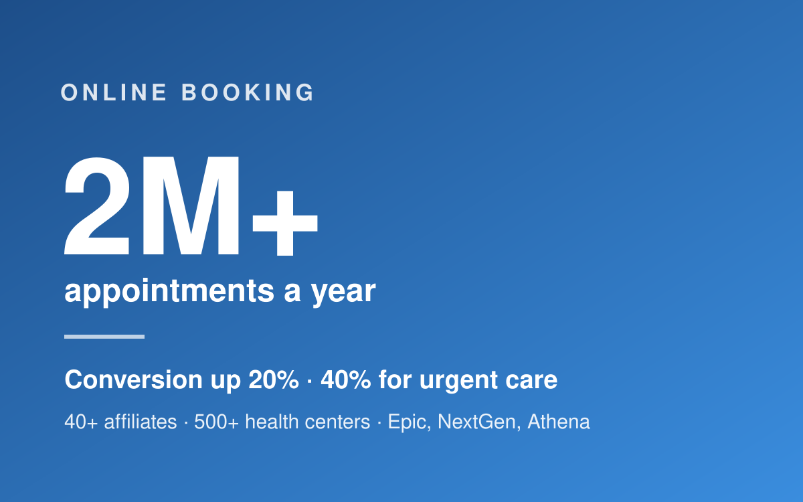
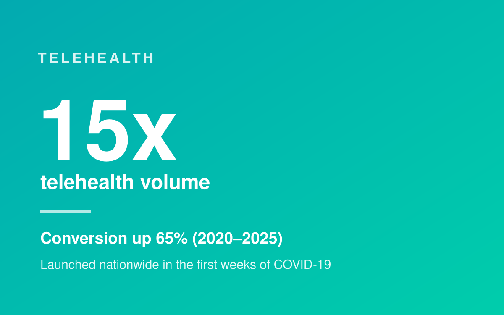
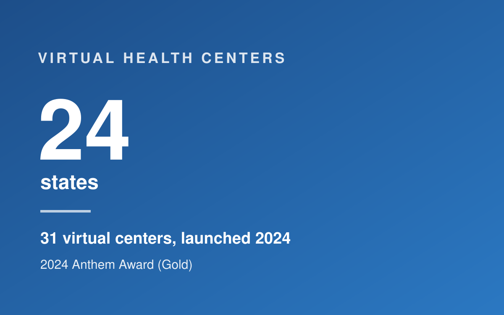

About me
I'm a digital product leader with 20 years in digital health and consumer tech. For seven years at Planned Parenthood, I grew from Project Manager to Senior Director, Digital Product, leading the national digital experience millions of patients use to find and book care, in English and Spanish.
How I work: ask the right questions, start with real user evidence, define the metrics that matter, and ship iteratively with engineering, design, data and clinical partners. I've managed associate directors, program and project managers, designers and researchers, and led cross-functional groups of up to 30. Before that: Animoto, SoulCycle and The Orchard (Sony Music).
View ResumeSelected work
Online booking at national scale
One scheduling platform for 40+ independent affiliates and 500+ health centers, integrated with Epic, NextGen and Athena. Scaled online booking from about 1M to 2M+ appointments a year and lifted conversion 20% (40% for urgent care), with features like Search by Earliest Available and SMS reminders.

Telehealth in the first weeks of COVID-19
When health centers closed, I conceived and launched the first nationwide telehealth program, accelerating plans 10x with iterative scheduling releases. I then led the phased rollout that made it a permanent care channel: volume grew 15x and conversion rose 65% (2020–2025).

Virtual Health Centers
Led research, design, development and cross-vendor implementation of the patient experience for Planned Parenthood Virtual Health Centers: 31 centers across 24 states, launched in 2024 and now a key source of patient acquisition and revenue for affiliates. Recognized with a 2024 Anthem Award (Gold).

agent.cv
A personal AI recruiting agency I designed and run on Claude. It sources roles, screens them against a verified profile, and drafts tailored resumes with a before/after changelog. Nothing goes out without my review. Free and open source.
Contact
I'm open to product leadership roles in digital health, nonprofits and public-interest tech, plus contract and fractional work. Remote or NYC metro / Long Island.
Let's talk